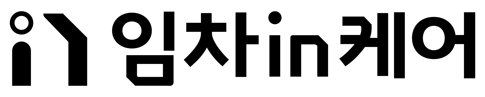

01 · QUIET ASSURANCE + VERMILION SIGNAL
잔잔한 온기
받쳐주는 온기는 Linen과 Oat가 만들고, Vermilion은 멀리서 임차in케어를 찾게 하는 짧고 선명한 신호가 됩니다.
큰 변화가 없어도,
오늘의 생활을 계속 살필게요.
큰 바탕은 조용하게 유지하고, 진입점·다음 행동·브랜드 표지에만 버밀리언을 집중합니다.
다음 확인 예정계약 종료 90일 전
기존의 온기와 여백은 유지하되, 전국 부동산의 키오스크에서도 임차in케어를 한눈에 발견할 수 있도록 두 개의 고유한 색 신호를 테스트합니다. 아래 로고와 워드마크는 확정안이 아니라 색·타입 운용 가능성을 확인하는 구조 시안입니다.
받쳐주는 온기는 Linen과 Oat가 만들고, Vermilion은 멀리서 임차in케어를 찾게 하는 짧고 선명한 신호가 됩니다.
큰 바탕은 조용하게 유지하고, 진입점·다음 행동·브랜드 표지에만 버밀리언을 집중합니다.
변화를 먼저 보고 고객이 준비할 수 있게 만드는 조용한 전문성. 세 방향 중 가장 추천합니다.
얇은 기준선과 작은 좌표점. 감시의 불안이 아니라 준비할 수 있다는 투명함.
그린 계열을 Sage 하나로 줄였습니다. 생활의 배경은 차분하게 두고, Solar Yellow가 발견·준비·다음 행동을 알립니다.
Green·Olive·Khaki를 겹치지 않습니다. 색보다 큰 여백과 한 개의 노란 신호가 기억을 만듭니다.
아래 글자는 완성 로고가 아니라 커스텀 레터링을 시작하기 위한 세 개의 디자인 가설입니다. 브랜드 행동에서 기억 장치를 뽑고, 한글·라틴·심볼·UI에 같은 원리가 작동하는지 검증하는 스튜디오식 접근입니다.
안정된 중립 고딕 아래 하나의 받침선이 전체 이름을 지지합니다. Vermilion을 쓰면 따뜻하고 능동적인 케어로 읽힙니다.
노란 점 하나가 변화 감지와 사전 알림을 담당합니다. 글자 장식이 아니라 UI 상태·키오스크 진입점으로 확장합니다.
열린 프레임은 보호막과 일상의 지속을 함께 표현합니다. 일반적인 방패·집 아이콘과 다른 인상을 만들 수 있는지 검증합니다.
현재 보유한 로고가 래스터 이미지이므로 아래 심볼은 정확한 리드로잉이 아닌 구조 테스트입니다. 최종화 단계에서는 원본 벡터로 비례와 간격을 다시 조정해야 합니다.

심볼과 워드마크가 동시에 경쟁하지 않도록 획의 개성과 색 분절을 제거한 테스트.
| 방향 | 원거리 발견 | 근거리 인상 | 검증할 위험 |
|---|---|---|---|
| 잔잔한 온기 + Vermilion | 가장 빠르고 강함 | 따뜻하고 능동적 | 경고·배달 브랜드 연상 |
| 맑은 시선 | 안정적이나 조용함 | 전문적이고 정돈됨 | 금융·B2B화 |
| 일상의 여백 + Solar Yellow | 밝고 친근하게 발견 | 생활 중심·낙관적 | 부동산 플랫폼의 Yellow와 유사성 |